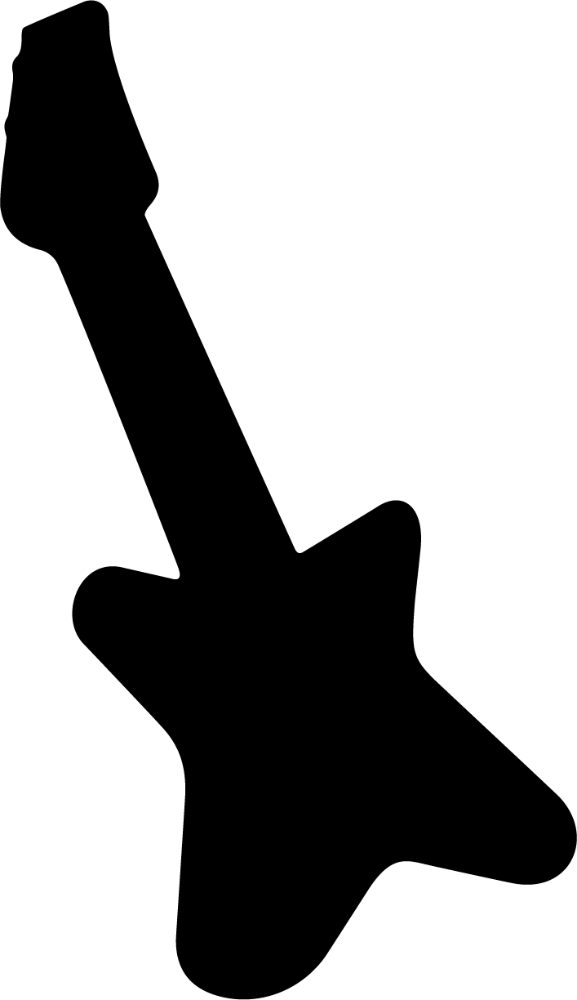
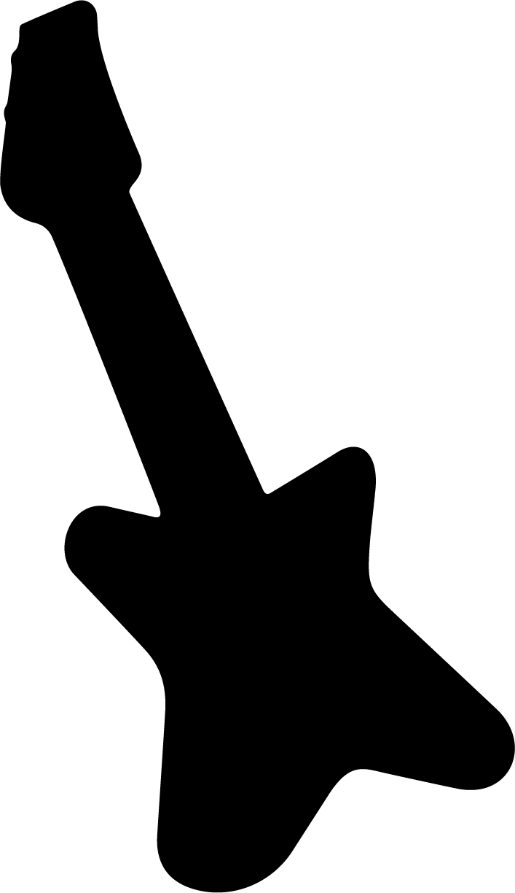

techno
This organization that takes care of unused and discarded electronic devices, and abandoned
“data containers”. We explore the roles of unused and discarded electronic devices in various contexts, in
order to create new services or products. On this platform you will find diferent services, from tutorials to
podcasts, on how to (re)use your old devices.
trash
services
A project from HEAD Geneva, with Audrey Délisse, Pauline Baldinetti, Raghid Jomaa, Melina
Reymondin, Arthur Groebli, Clément Vogelsperger, Salomé Kahn, Théotime Serres, Andréia Rodrigues, Hugo
Langlade, Dorotha Grajewska , Illahna Besic , Benjamin Boulesteix, Emma Parente.
With the supervision of Nicolas Nova & Gordan Savicic
With the supervision of Nicolas Nova & Gordan Savicic

 
